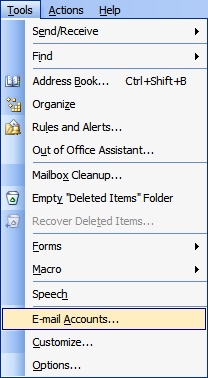
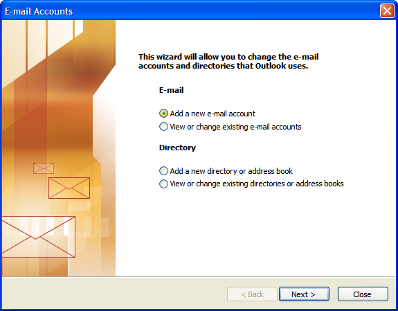
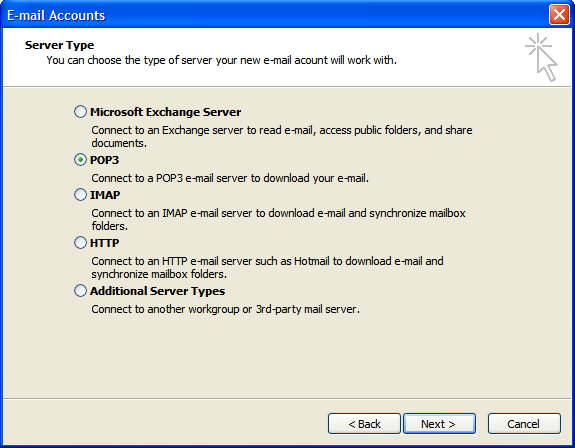
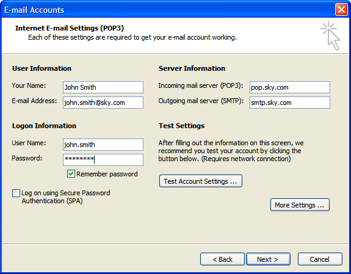
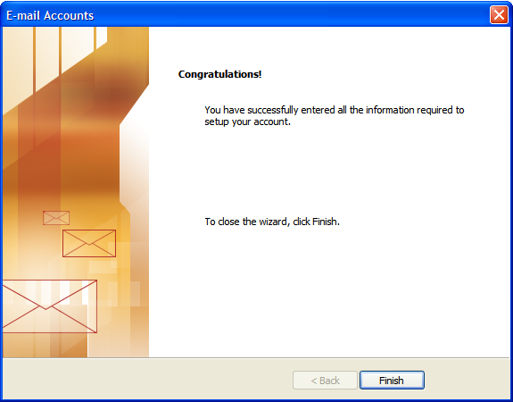

Outlook
Guide to setting up your Sky email in Outlook (2002 and 2003)
-
Open Outlook, click [Tools] then select E-mail Accounts
 -
Select Add a new e-mail account, click Next
 -
Select POP3, click Next
 -
Type your name in the Your Name box (will appear as the ‘from’ name on emails you send).
Enter your email address (e.g.: john.smith@sky.com) in lowercase letters, with no spaces, in the E-mail Address box.
In the ‘Incoming mail server’ box enter: pop.sky.com (all lowercase, no spaces).
In the ‘Outgoing mail server’ box enter: smtp.sky.com (all lowercase, no spaces). In the ‘User name’ box enter the first part of your @sky.com email address (everything before the @ sign). In the Password box, enter the password for your @sky.com email account. Tick the “Remember password” box if you would like Outlook to remember your password so that you do not need to enter it each time you check for any new email.
Leave the “Log on using Secure Password Authentication (SPA)” box unchecked.
-
Click Next
 -
Click Finish
 -
Repeat the above process for each of your sky.com email accounts